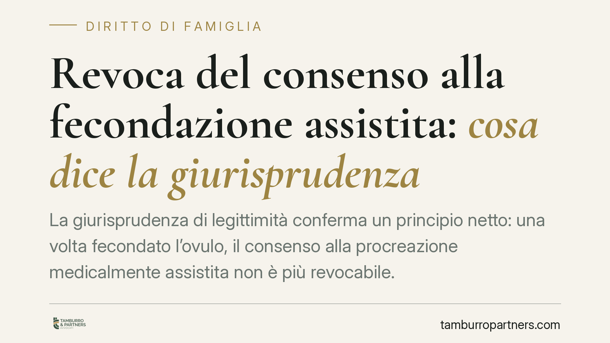

Revoca del consenso alla fecondazione assistita: cosa dice la giurisprudenza
La giurisprudenza di legittimità conferma un principio netto: una volta fecondato l'ovulo, il consenso alla procreazione medicalmente assistita non è più revocabile. Il padre non può disconoscere il figlio né tornare sulla propria scelta. È il punto di equilibrio tra autodeterminazione dei genitori e tutela del nato, con effetti concreti su ogni coppia che intraprende un percorso di PMA.

Il caso e il principio
Il tema è ricorrente nei tribunali della famiglia: un partner presta il consenso a un percorso di procreazione medicalmente assistita (PMA), ma dopo la fecondazione dell'ovulo cambia idea e prova a revocarlo, spesso per sottrarsi ai doveri genitoriali.
L'orientamento consolidato della giurisprudenza di legittimità è chiaro: dal momento della fecondazione dell'ovulo il consenso diventa irrevocabile. Chi ha acconsentito assume lo status di genitore e non può più disconoscere il nato.
Un'avvertenza di metodo. Attribuire questo principio a una singola pronuncia richiede la verifica degli estremi esatti (numero di sezione, numero e anno della sentenza). In assenza di tali dati con certezza, parliamo di orientamento consolidato: prima di citare in atti o comunicazioni una specifica decisione, occorre reperirne gli estremi ufficiali.
Inquadramento normativo: art. 6 e art. 9 L. 40/2004
La disciplina di riferimento è la Legge 19 febbraio 2004, n. 40.
L'art. 6 regola il consenso informato: la coppia deve essere informata dei metodi, dei costi e dei rischi, e la volontà può essere revocata «fino al momento della fecondazione dell'ovulo». È questa la soglia temporale decisiva: dopo, la revoca non produce effetti.
L'art. 9 stabilisce le conseguenze di quel consenso. Il coniuge o convivente che ha acconsentito alla PMA non può esercitare l'azione di disconoscimento della paternità (art. 243-bis c.c.) né l'impugnazione del riconoscimento per difetto di veridicità. La madre, dal canto suo, non può dichiarare la volontà di non essere nominata.
Omologa ed eterologa: una distinzione da tenere presente
Gli effetti dell'art. 9 valgono sia per la PMA omologa (gameti della coppia) sia per quella eterologa (gameti di un donatore esterno). Ma il profilo eterologo merita attenzione autonoma.
Il divieto di fecondazione eterologa, originariamente previsto dalla L. 40/2004, è stato dichiarato illegittimo dalla Corte Costituzionale (sent. n. 162/2014). Da allora l'eterologa è ammessa nel rispetto dei requisiti di legge.
Nella PMA eterologa il donatore di gameti non acquisisce alcuna relazione giuridica con il nato (art. 9, comma 3, L. 40/2004). Il genitore, invece, resta vincolato dal consenso prestato: proprio perché manca un legame biologico, il consenso è il fondamento stesso del rapporto di filiazione, e disconoscere significherebbe negare l'unico titolo su cui quel rapporto poggia.
Perché conta: gerarchia di interessi
La scelta del legislatore e dei giudici privilegia la stabilità dello status del nato rispetto al ripensamento del genitore.
Una volta avviato il processo biologico, l'autodeterminazione della coppia cede il passo alla tutela dell'embrione e, poi, del bambino. Il consenso alla PMA non è una promessa revocabile: è un atto che genera responsabilità giuridiche irreversibili.
Resta fermo il diritto del figlio ad accertare la propria filiazione. Nella PMA il nato può agire per l'accertamento del rapporto (art. 269 c.c.) nei confronti di chi ha prestato il consenso; ciò che è precluso è la strada opposta, cioè il tentativo del genitore di negare quel legame dopo averlo determinato con la propria volontà.
Cosa fare in concreto
- Leggere per intero il modulo di consenso prima di firmare: verificare fino a quale momento è possibile revocare e quali effetti giuridici comporta la sottoscrizione.
- Individuare la soglia temporale: la revoca è ammessa solo fino alla fecondazione dell'ovulo. Dopo, ogni ripensamento è privo di effetti.
- Conservare copia della documentazione clinica e del consenso: sono elementi decisivi in caso di contestazioni sullo status del nato.
- Nel percorso eterologo, chiarire i profili sulla donazione: il donatore non è genitore; il genitore che consente lo è a tutti gli effetti.
- Un approfondimento legale preventivo può aiutare a comprendere gli effetti del consenso e le sue conseguenze irreversibili, soprattutto nei casi di coppie di fatto o percorsi eterologhi.
Contributo informativo a cura di Tamburro & Partners Avvocati. Non costituisce parere legale.
Ogni famiglia ha il suo equilibrio.
Separazione, divorzio, affidamento, assegno: se vuoi un confronto riservato su una specifica situazione, scrivi allo studio. Ti rispondiamo entro un giorno lavorativo.